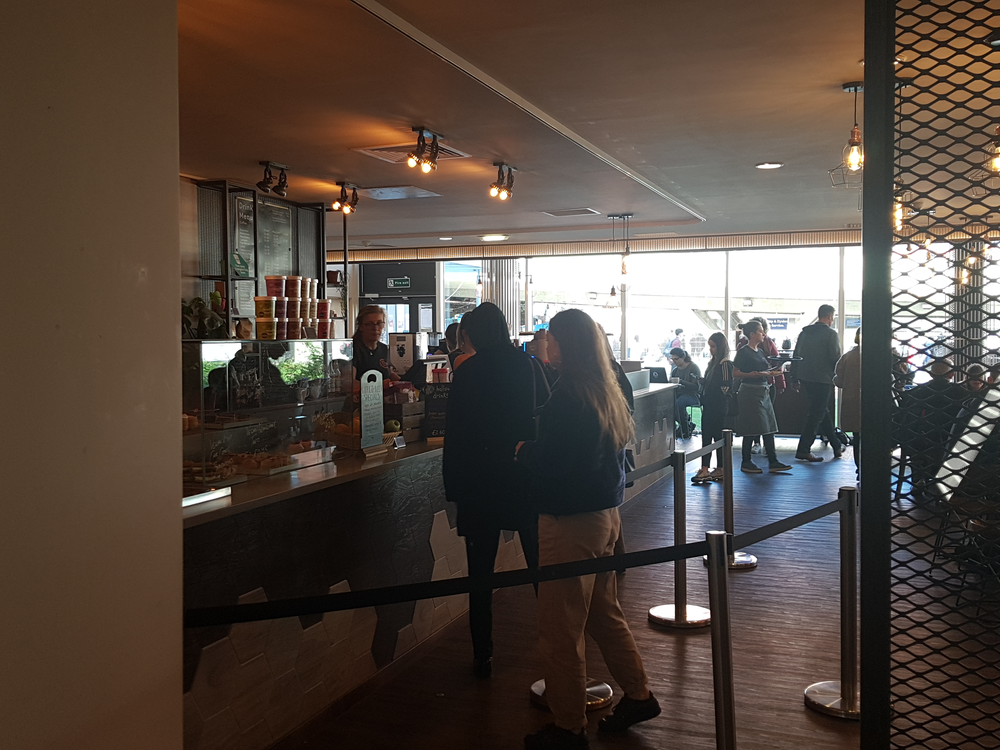
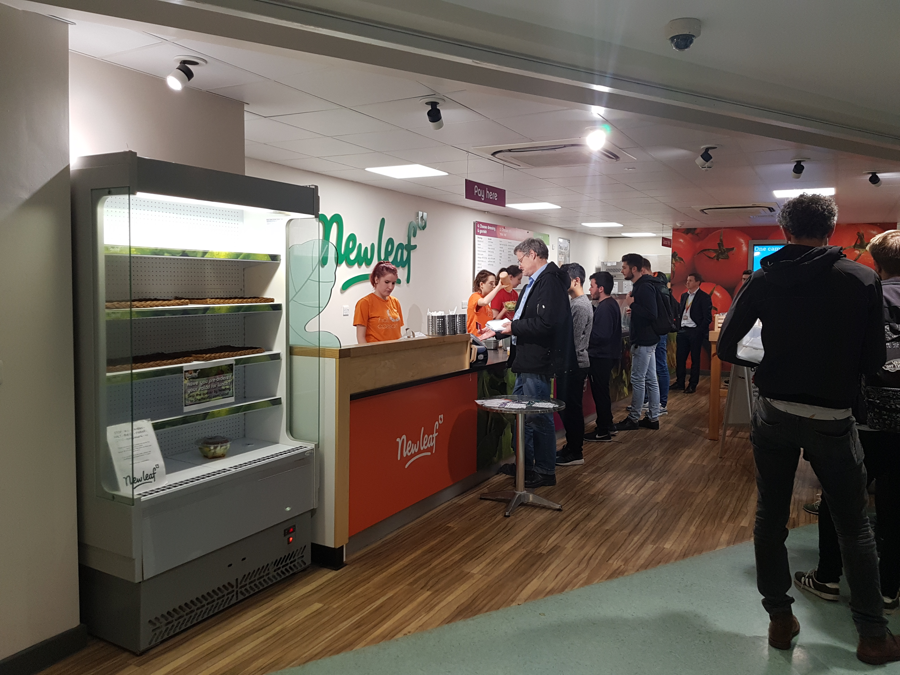

A Week In The Life
In the morning a student could collect their coffee from the SU shop or Interval café to give themselves an energy boost before a day of studying and lectures.
Throughout the week a Computer Science student could grab delicious food from the Students’ Union building. Great lunch and dinner options are detailed on the Eating options page. There are many options available to suit all diets at a student friendly price.
There are also places to study in the Students’ Union building. PCs are available as well as bookable rooms for team meetings and group projects.
In the evenings and weekends, Bar One and Foundry are perfect venues for socialising with fellow students in a safe and fun environment. Events like Roar and Pop Tarts at Foundry and Bar One’s quiz night are always great events.